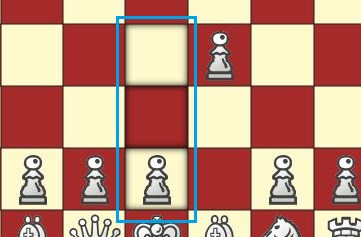
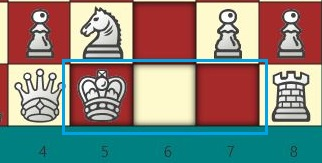
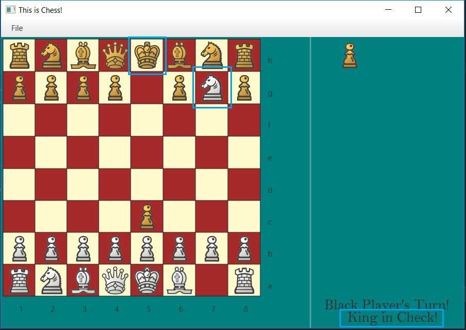
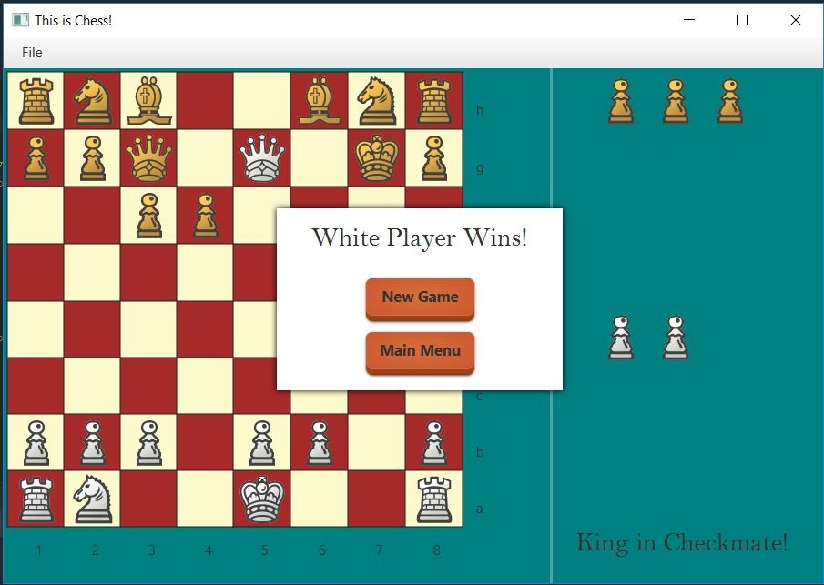

Selecting a Piece -- Move the cursor over the piece you wish to select, and click once.
Moving A Piece -- Select the piece you wish. Once the piece is selected, all possible moves will appear as shadowed spaces. By moving your cursor over one of these spaces and clicking, the piece will move there if it is possible. 
- King: The King piece can only move to a single space in any direction. There is a special rule called castling that is described in the Castling section.
- Queen: The Queen piece can move any number of spaces in any direction until it encounters another piece. She is considered the most powerful piece in chess.
- Bishop: The Bishop piece can move any number of spaces diagonally until it encounters another piece.
- Knight: The Knight piece can move in an L shape from its current position That is one space then two spaces in the parallel direction, or two spaces then one space parallel. It is able to jump over all other pieces, as long as it is capturing or moving to an unoccupied space.
- Rook: The Rook piece can move any number of spaces along the row and column it contains until it encounters another piece. The Rook participates in castling with the King, as is described in the Castling section.
- Pawn: The Pawn piece traditionally can move a single space forward unless there is a piece in the space in front of it. It is able to move a single space diagonally as long as it is capturing and moving towards the opposing side of the board. If a pawn piece has not moved at all in the game, it may move forward two spaces instead of one.
Capturing A Piece -- If one of the possible moves falls upon a space containing a rival piece, and capture is possible, select the space containing the rival piece. By clicking on that space, the selected piece will replace the rival piece in the place and send the captured piece to the Graveyard on the right hand side.


Castling -- If the King and one of the Rooks on the same side has not moved, and the path between them contains no pieces and are not threatened by enemy pieces, then the King and the Rook may perform a maneuver called Castling. This maneuver allows the King to move two places towards the Rook, and the Rook to occupy the space that was between the King's original starting position and the King's new position. If the second space from the king shows as a possible move, the King may castle.
Check -- If a piece is moved to a space that threatens the opponent's King, then the King is in check. In check, the King must be moved out of check in some way. This can be accomplished by moving the King, capturing the threatened piece, or moving a piece to block the threatening piece and the King. The board will display this in the lower right hand corner of the game screen.
Checkmate -- If the King on either side is placed into Check, and the King is unable to exit out of Check, then the King is considered in Checkmate and the player who has placed the opponent's King in Checkmate is declared the Winner. The game will declare so and give the player the option to start a new game, or return to the Main Menu.
